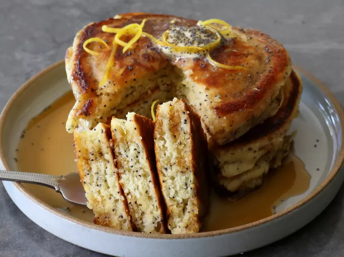

Lemon & Poppyseed Pancakes

Description
Follow these 3 key techniques so Chef John's lemon poppy seed pancakes turn out perfectly: give the lemon zest and sugar time to react, whisk the batter just enough and not too much, and have enough patience to let the batter rest for 10 minutes before cooking. You'll be rewarded with delicious, fluffy pancakes.
Ingredients
- 1 rounded tbsp white sugar
- 1 tbsp lemon zest, or more to taste
- 5 tsp poppy seeds
- 1 large egg
- 3 tbsp butter, plus more for pan
- 3 tbsp lemon juice
- 1 cup whole milk
- 1 1/2 cups all-purpose flour
- 1 tsp kosher salt
- 2 tsp baking powder
- 1/4 tsp baking soda
- lemon wedges (optional)
Directions
- Combine sugar and lemon zest, and stir to combine. Let stand about 15 minutes.
- Whisk flour, salt, baking powder, and baking soda together in a separate bowl. Set aside.
- Add poppy seeds, egg, and melted butter to the bowl of sugar, and whisk thoroughly. Add lemon juice, milk, and flour mixture. Whisk gently just until flour disappears. Let batter rest for 10 to 15 minutes before using.
- Heat a nonstick skillet over medium heat, and generously grease with melted butter or vegetable oil.
- Transfer about 1/3 cup of batter into the pan for each pancake, and cook until a few bubbles start to pop through the surface, 3 to 4 minutes. Flip and cook the second side 3 to 4 minutes. Serve immediately.